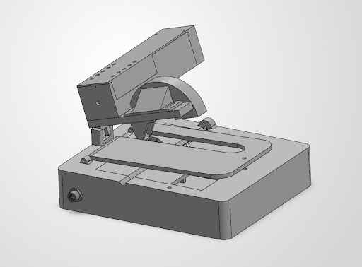
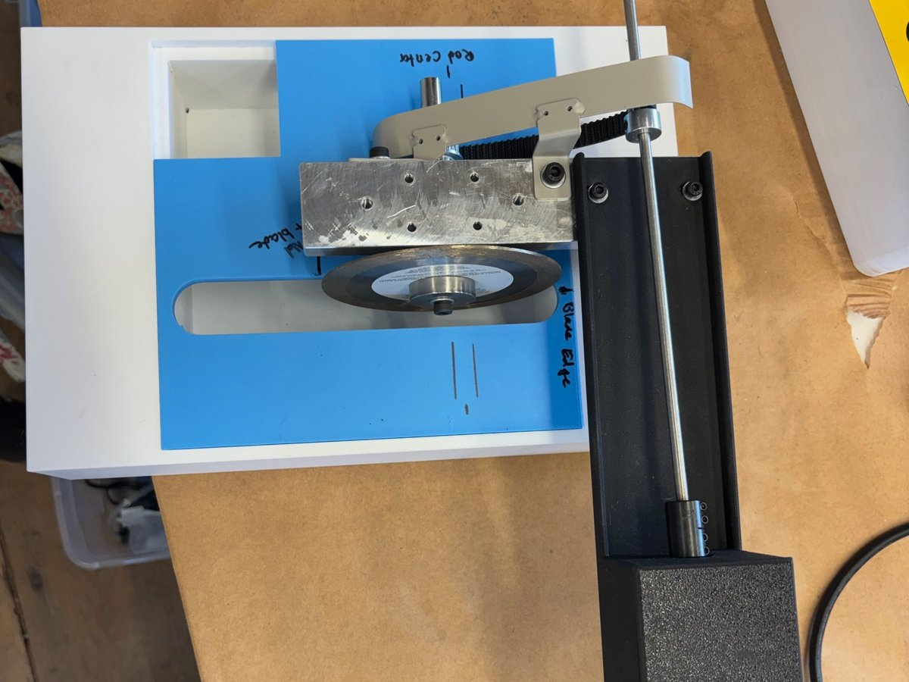
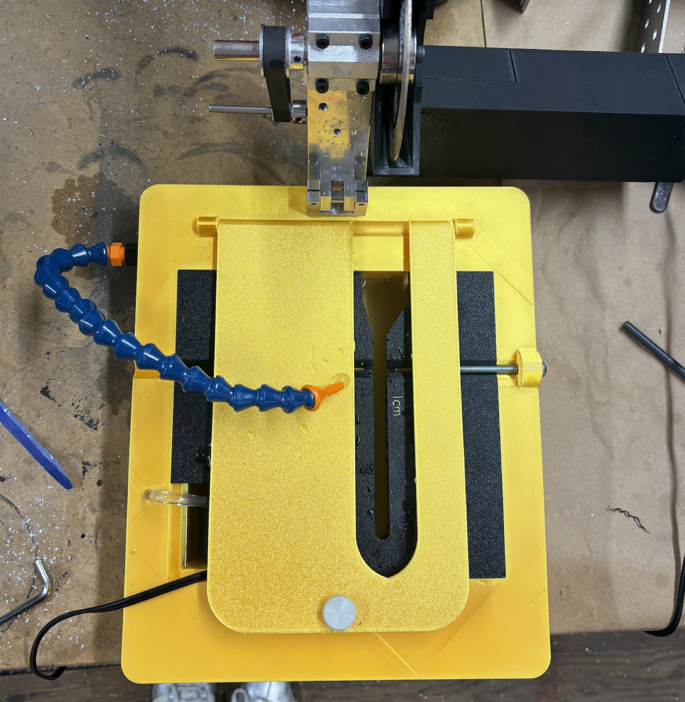
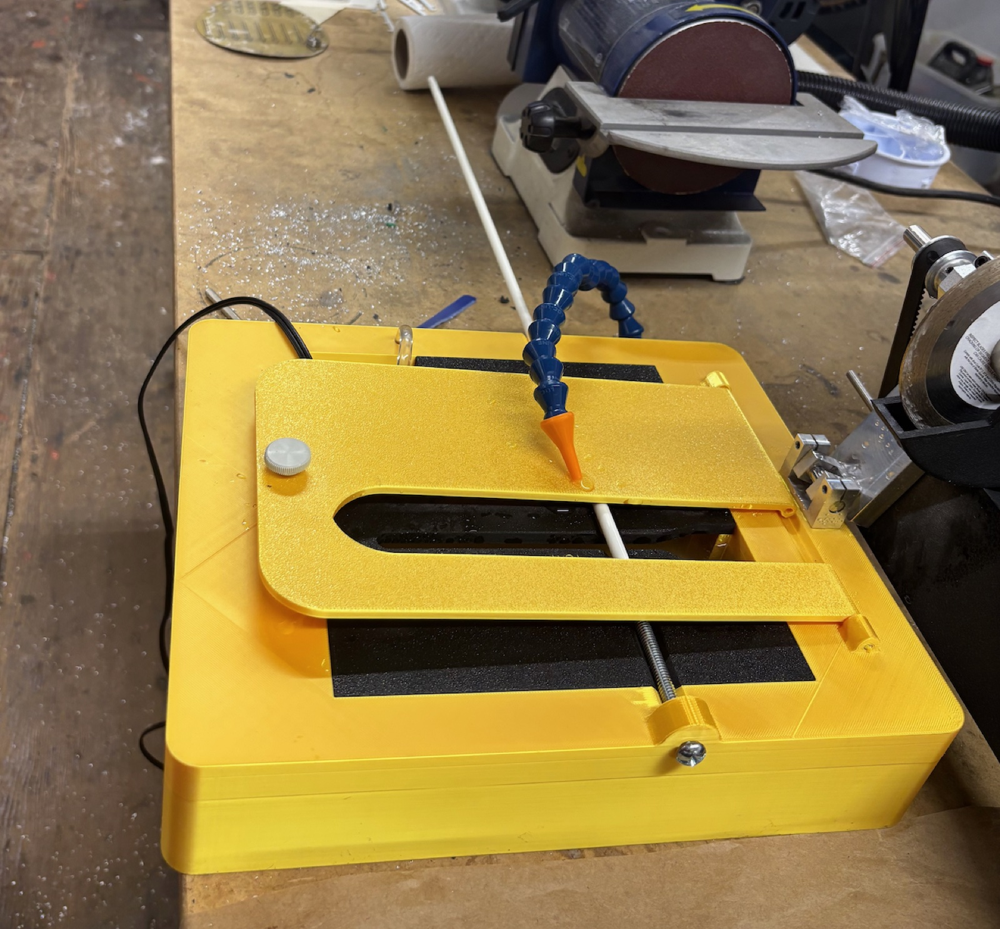

01May 2026
Ceramic wet saw
A compact wet saw that cuts ceramic rods cleanly to an exact, adjustable length.
The problemI needed to cut Ceramic Alumina rods to clean, repeatable lengths to be used as separators in a more complex part assembly for a computed tomography machine. Cutting the rods on-site was preferable over having them manufactured, as it allowed for rapid iterations and faster testing of the larger part assembly.
What I didI started with sketches and research into the best ways to cut ceramics. Then I modeled several designs in CAD, 3D printed, and worked in the shop to adjust the metal components. I tested each iteration of my design on sample rods and made revisions until the saw cut smoothly and accurately.
- Wet cutting. Dry cutting would not result in clean cuts; the rods chipped. So I researched and bought several water pumps to test, as well as nozzles/tubing types, eventually landing on a Loc-Line Nozzle.
- Sourcing parts. I took the motor and switch from an older handheld saw and re-soldered the connections to work in the new device. I sourced the other parts from McMaster-Carr.
- Keeping it dry. I built a sealed, waterproof section for the motor and circuitry and tested several blade guards to cut down splashing.
- Accurate cuts. During test cuts, rods vibrated in the V-groove of the saw, which led to uneven cuts; I printed a clamping lever piece to secure them down, resulting in straighter cuts. To achieve precise overall length I added an adjustable screw stopper and length markings along the saw base surface.
- Implementation. My final design made repeatable, accurate cuts. I wrote a maintenance manual and user guide. The saw was successfully used by the team working on the larger assembly through their building process.



